| 続・心理統計学の基礎 |
| 続・心理統計学の基礎 |
レベル1モデルの独立変数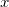は、集団平均でセンタリングする。
| 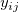 | 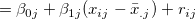 | (4.126) | ||
| 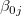 | 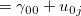 | (4.127) | ||
| 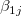 | 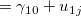 | (4.128) |
各パラメータは、
各集団における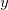の平均
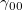 母集団全体での平均
各集団における回帰直線の傾き
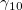 集団内回帰直線の母集団平均
となる。
レベル1モデルの独立変数は、全体平均でセンタリングする。
| 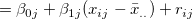 | (4.129) | |||
| (4.130) | ||||
| (4.131) |
各パラメータは、
の全体平均における各集団のの予測値（調整済み平均）
の全体平均における各集団のの予測値の平均
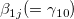 全ての集団に共通の集団内回帰直線
となる。
このとき、ランダム係数モデルにおけるとランダム効果の共分散分析モデルにおけるの値は一致しない。 これを解消するには、共分散分析モデルの切片に集団平均でセンタリングしたを加え、
| 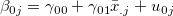 | (4.132) |
とする必要がある1。
尤度比検定は、制限付き最尤法でなく通常の最尤法の結果に適用される。 ただし、ランダム効果の部分のみが異なる形で入れ子関係にあるモデルについては、制限付き最尤法において尤度比検定を行うこともできる。
Footnotes
| 続・心理統計学の基礎 |